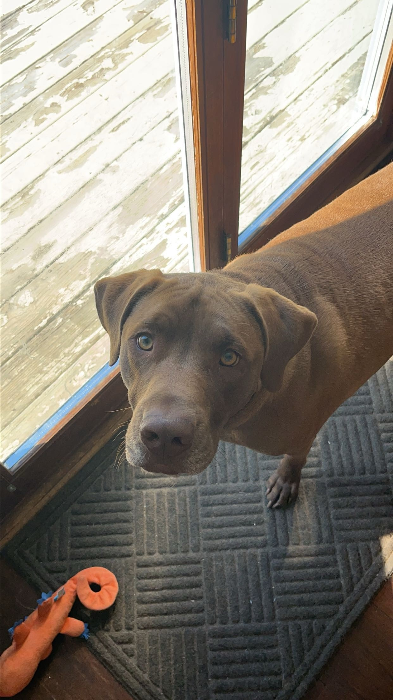
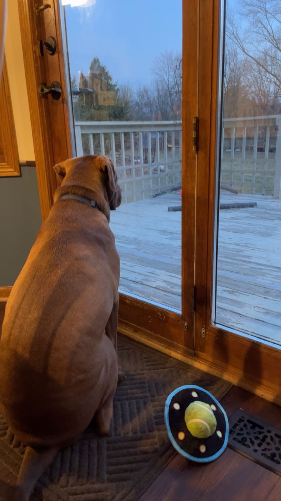

Luke, named after the iconic Luke Skywalker from the Star Wars franchise just so my dad can say "Luke I am your father". He has been a beloved member of our family since February of last year. From the moment he entered our lives, he brought with him a sense of adventure and a touch of the Force, just like his namesake. Luke is a handsome and spirited dog, a mix of enthusiasm and loyalty. His fur is a brown color that glistens in the sunlight, and his piercing yellow eyes, never fail to captivate those who meet him. His playfulness is infectious, and he's always ready for a game of fetch or a long walk in the park.
 Much like the character he's named after, Luke has a strong sense of duty and is incredibly protective of his family. He watches over our home with the same vigilance that Luke Skywalker showed when protecting the galaxy from the dark side. His presence provides us with a sense of security and comfort, knowing that we have a loyal companion by our side. But it's not just his protective nature that makes Luke special; he also has a heart full of love. He's always eager to shower us with affection, whether it's through his gentle nuzzles or wagging tail. The bond we've formed with Luke in such a short time is truly remarkable. As we celebrate our time with Luke, we're reminded of the epic adventures and unforgettable moments that both Luke Skywalker and Luke the dog have brought into our lives. They are both heroes in their own right, making our world a brighter and more exciting place.